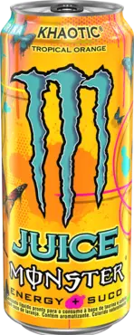
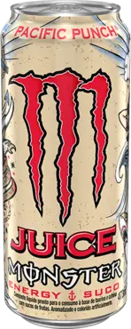
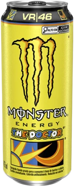
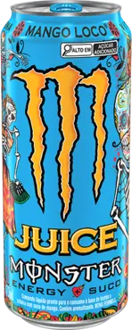

Sobre
Monster Energy® é uma bebida focada diretamente em pessoas que buscam a verdadeira energia. O Monster Energy® é uma marca mundialmente conhecida, que vem disputando no Brasil com diversas marcas famosas. O Monster Energy® tem 3 linhas; Ultra - Sem açúcar e focado em algo mais leve; Originais - O sabor clássico com variação sem açúcar e outras mais refrescantes; Juice Punch - Focado em sabor, utiliza normalmente frutas como base do sabor; Ice Tea- Sabores inspirados em chás gelados, ideal para quem não quer sentir o "saBOURR" do energético.
Imagens

Monster Khaotic, o clássico sabor de laranja.

Monster Branco, um dos mais aclamados e famosos, sabor cítrico delicioso.

Monster Rio Punch, aquele sabor de punch de frutas, há referências do nosso Brasil.

Monster Punch, o clássico sabor de punch de frutas.

Uma novidade no Brasil, sabor leve de laranja, edição do Valentino Rossi.

Mango Loco é feito para quem tem um paladar mais adoçicado, sabor delicioso de manga.